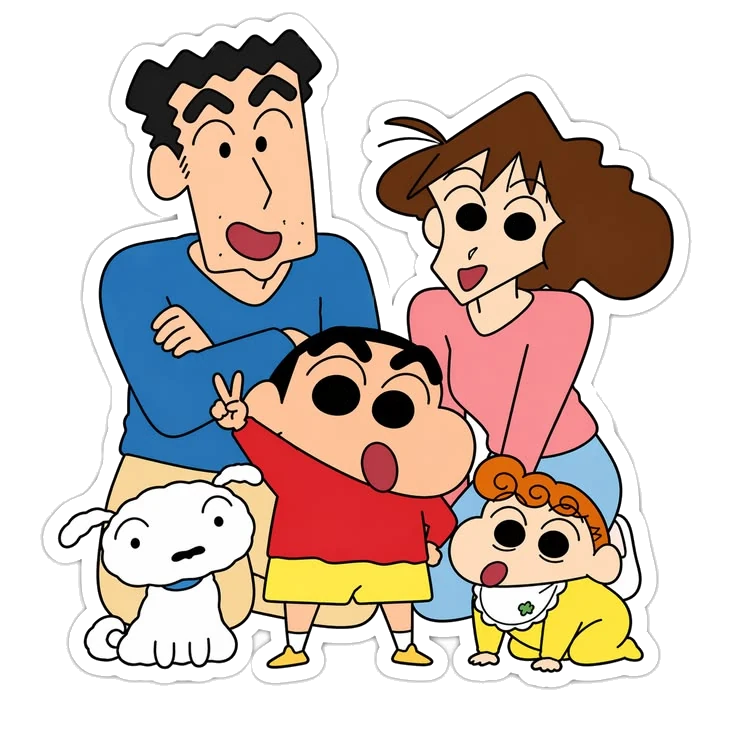
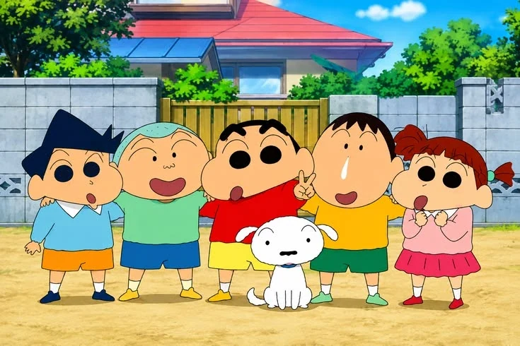
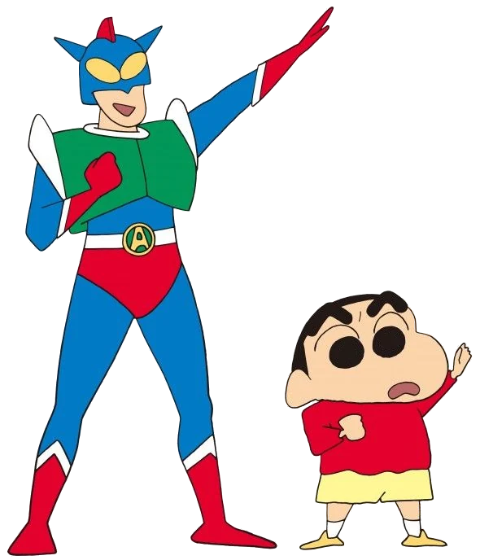

Kasukabe's most famous 5-year-old
Ora! It's Shin-chan.
Mischief maker, Chocobi fan and Action Kamen's loudest supporter. He just tore through the page to say hi.
The Nohara family
Pick anyone in the portrait. Every one of them has a signature move.

The Kasukabe Defense Force
Point at a kid in the photo, or poke their card. Each one reacts in their own way.

Fearless.*
*Until somebody's mom shows up.
Toru Kazama
The serious one
Cram school, English lessons and big plans to be elite. Gets dragged into chaos anyway.
Nene Sakurada
The director
Runs very strict games of house. When things go wrong, her stuffed bunny takes the punches.
Masao Sato
The crybaby
Rice ball head, big heart, bigger tears. Dreams of drawing his own manga one day.
Bo-chan
The quiet one
Says very little and collects interesting rocks. Rocks so far: 0
Shin-chan's hero
Action Kamen
Shin-chan's favorite TV superhero. Never loses, never stops laughing, and his Action Beam fixes just about everything.
Beams fired: 0

The grown-ups of Kasukabe
Flip a photo to read what Shin-chan really thinks of them.
Shin-chan's rules for living
Drag the notes around. He would want you to make a mess.Six rules he lives by, every single day.
Chocobi comes first. Always.
Green peppers are the enemy.
Action Kamen never loses. Wahahaha!
Ask every pretty lady if she puts green onions in her natto.
When in doubt, do the butt dance.
Buriburizaemon will save you. For a small fee.
Since 1990
Still five after all these years
A comic is born
Shin-chan first appears in Weekly Manga Action, drawn by Yoshito Usui.
On TV
The anime premieres on TV Asahi. Kasukabe has not been quiet since.
Big screen
The first movie arrives: Action Kamen vs. Leotard Devil. A yearly tradition begins.
New chapters
The manga continues as New Crayon Shin-chan, carried on by Usui's team.
Still five
Over 1,000 episodes and more than 30 movies later, he still hasn't finished kindergarten.
Shin-chan's flower delivery
Tell him who deserves flowers today. He'll bring them over (a little shy), and you get a link to send the moment to them.
Delivered to !
Send them the moment. The link opens this page and plays the delivery with their name on it.
Join the Kasukabe Defense Force
Episode picks, movie news and fan art. One email a month, zero homework.